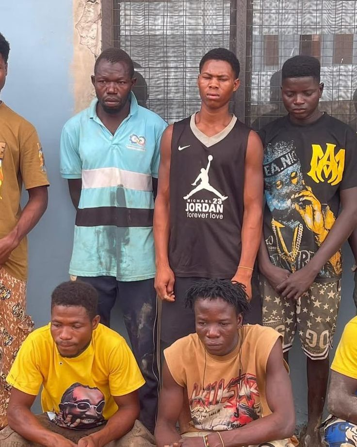
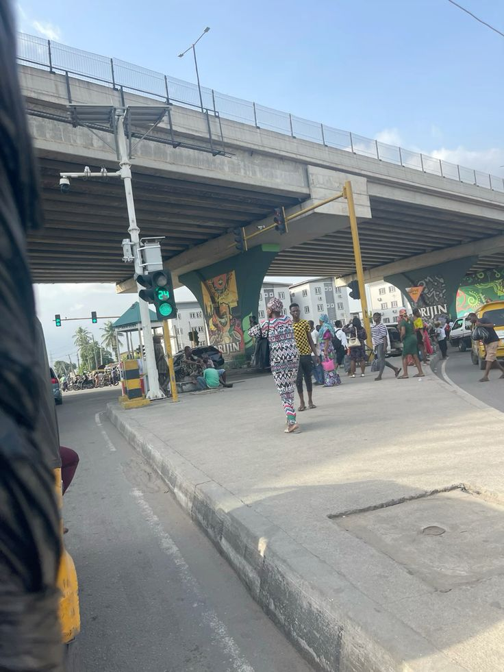

some projects exist just to prove you can code. others exist because they have to.
WhereAreThey is the second kind. it's a crowdsourced missing persons platform built specifically for nigeria, using flutter and supabase. it's heavy work. not technically — technically it's just database management, geolocation, and clean UI reporting — but mentally, it takes a toll.
you're building a database for absence. you're designing a user interface for empty spaces, for families who are waiting for news that might never come. when you're testing the image upload features or setting up the push notifications for local radius alerts, you aren't just thinking about bytes and bandwidth. you're thinking about real people who are lost in real time. the platform relies on the crowd, on the idea that someone, somewhere, saw something and can drop a pin or update a status.


but if it works, if it helps even one person find their way back or gives a family some semblance of closure, it justifies every single late night i've spent staring at the console. technology is just a tool at the end of the day. it doesn't have a soul. what matters is where you point it, and right now, i want to point it at the things that actually hurt.
the hardest design decision was the sighting verification system. how do you confirm that someone's tip is genuine without adding friction that discourages people from reporting at all. you want high volume. you also want signal over noise. those two things pull against each other and the balance point is somewhere in the UI that i've been iterating on for weeks.
there's also a dignity consideration baked into every screen. the families using this platform are not just users in a product funnel. they're people in crisis. every notification copy, every error message, every empty state has to be written with that specific reality in mind. that's a different kind of product thinking than i'm used to.
we'll get there. and when we do, it'll have been worth every second of the heaviness.
← Back to Blog